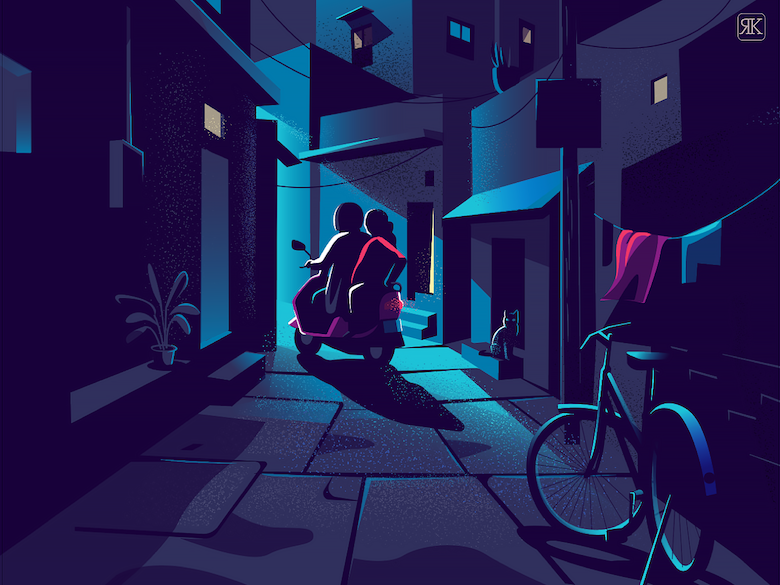

LIVING CONVERSATIONS
Living Conversations is a life skill course that
enables learners to exchange and express in any given situation.
It aims at enabling students to converse
confidently and participate in a variety of discussions appropriately
in different situational and cultural contexts, making them
influential communicators. It helps us enable qualities of deep listening
and clear and concise communication skills.
COURSE TEACHER: Mrs. REKHA VERMA
Our mam has a keen interest in facilitating students armed with initiative, novelty, and enormous intellectual energy with a talent for collaboration and teamwork. She has more than 18 years of experience has a strong academic base and her flair for teaching made her a thorough professional. She believes that a strong value system, integrity, and honesty are the virtues that make you sustainable in the future. She is very passionate about teaching, educational leadership, research, and online learning.